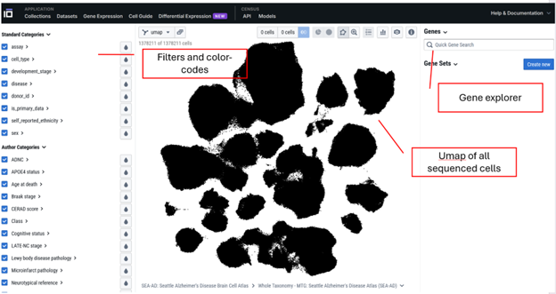
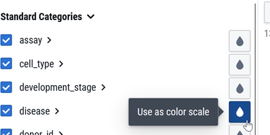
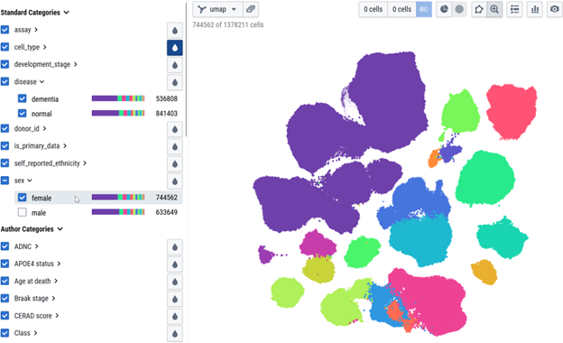

Pre-lab
The goals of this pre-lab are to:
Gain an understanding of the SEA-AD project.
Build confidence in accessing the SEA-AD interface and exploring this vast dataset.
What is the SEA-AD project?
First, let’s get to know a bit more about the SEA-AD project, which was reported by (Gabitto et al. 2024) in this Nature Neuroscience paper.
We’re not going to read the whole paper, but let’s take a look at part of Figure 1 (Panel A), where they outline the project:
It might look complicated, but here’s the basic idea: collect brain tissue samples, sequence RNA from individual neurons to measure gene expression, use that transcriptional data to sort cells into different types (we’ll cover this in more detail later), and then analyze the data for gene expression differences related to Alzheimer’s disease
Now let’s take a look at the heroic donors who were studied for the SEA-AD project. This part of Figure 1 (Panel B) gives information about the donors based on levels of symptoms for AD: high, intermediate, low, or had no AD diagnosis (the healthy controls).
Check Your Understanding:
Q1: In the boxplot of ages by group above, the line in the middle of each box represents the median age. Using that median as the “typical” value, what is the typical age of donors with high levels of Alzheimer’s?
About 70 years old
About 80 years old
About 90 years old
About 100 years old
Q2: What is the typical age of the donors with no AD?
About 70 years old
About 80 years old
About 90 years old
About 100 years old
Q3: Why is it important that the researchers found healthy donors of about the same age as those with high levels of Alzheimer’s disease symptoms?
Because if the ages were very different, it wouldn’t be possible to know if differences in gene expression were due to Alzheimer’s or to normal aging.
Because if the ages were very different, there could be generational differences that would make it difficult to know if the gene changes observed were really due to Alzheimer’s.
Because if the ages were very different, there could be other age-related factors influencing the results.
All of these!
Q4: Overall, were there more female or more male donors in this study?
More female donors
More male donors
The exact same
Q5: Female donors are only slightly more represented than male donors in the “No AD” group. Is the same true for the high AD group?
Yes, it’s the same proportion.
No, female donors are under-represented in the high AD group.
No, female donors are even more over-represented in the high AD group.
Understanding and Representing Gene Expression Data
The SEA-AD project measured gene expression from individual cells in the CNS of AD and healthy donors. Because RNA is transcribed from DNA this is often called transcriptomic data – data that measures all the transcripts a single cell currently expresses. Additionally, in order to classify different cell types based on gene expression, we use a representation called a UMAP (Uniform Manifold Approximation and Projection). To represent levels of gene expression of specific genes to compare across different cell types we can also use a heatmap.
Let’s hear from Meuler & Casimo (2024) on their explanation of how single cell RNA sequencing works and how it is represented as UMAP (Uniform Manifold Approximation and Projection) and heatmaps.
The remainder of the text and figures in this section are adapted from their work:
“Transcriptomic data is a type of data that allows scientists to investigate which genes a cell is transcribing/expressing and in what quantities. If a cell, and more specifically, that cell’s nucleus, contains a specific RNA transcript, this indicates that the cell is expressing the specific gene associated with that RNA. By (1) isolating nuclei, (2) sequencing the mRNA transcripts found within the nuclei, and (3) counting those transcripts, we can tell which genes the cell is expressing and how much these cells are expressing these genes. Repeating this process for thousands of cells from a sample of brain tissue allows researchers to find similarities and dissimilarities between cells on the basis of their gene expression. These patterns of similarity and dissimilarity are then used to classify certain cells as specific “types.” The graphic below explains in detail how scientists gather and interpret transcriptomic data.”
Check Your Understanding:
Q6: The SEA-AD project measured ____ in individual cells from the brains of healthy and AD donors.
DNA
RNA
Protein
- All of the above
Q7: For each cell, sequencing enabled the SEA-AD researchers to quantify:
The expression of one gene for each cell
The expression of many genes for each cell
The expression of one protein for each cell
The expression of many proteins for each cell
Q8: For the UMAP plots shown in Figure 1 of Gabitto 2024, each dot represents a single:
Patient
Cell
RNA
Brain region
Using the Cell×Gene Explorer for the SEA-AD dataset
Let’s roll up our sleeves and figure out how to explore the SEA-AD data. It’s a complex data set, but we can do it!
- Access the SEA-AD data through the Cell x Gene explorer: https://cellxgene.cziscience.com/collections/1ca90a2d-2943-483d-b678-b809bf464c30
You’ll find many options to explore. The first item on the list is the complete SEA-AD dataset for the middle temporal gyrus (“Whole Taxonomy - MTG: Seattle Alzheimer’s Disease Atlas (SEA-AD)”). Next, you can access the full dataset for the dorsolateral prefrontal cortex (“Whole Taxonomy - DLPFC: Seattle Alzheimer’s Disease Atlas (SEA-AD)”).
Following these are breakdowns of the data by specific cell types (for example, just the Lamp5 cells, just the Pax6 cells, etc.). These subsets help make the project’s vast data more manageable and easier to focus on.
For our first exploration, let’s start with the whole dataset for the middle temporal gyrus. Click Explore next to the “Whole Taxonomy - MTG: Seattle Alzheimer’s Disease Atlas (SEA-AD)” option to begin.
Get to know the interface. You should now see the Cell × Gene explorer displaying the SEA-AD data. Your screen will look like this: filters and mappings on the left, a UMAP visualization of all individual cells in the center, and the gene explorer panel on the right.
Figure 9
Use the zoom tool - In the large middle panel, you’ll see the UMAP — a visualization representing every cell sequenced in this database, totaling 1,378,211 cells! Right now, it might just look like a big black blur. Let’s zoom in to see more detail! Click the Zoom tool, then use your mouse to zoom in and out of the UMAP.
Figure 10
As you zoom in, you’ll begin to see individual small dots – each dot represents a single cell – it could be a neuron, or nonneural brain cell type such as a microglia, or an astrocyte… whatever was sequenced
Now Zoom back out to where you can see the whole UMAP.
Color cells by a category with the raindrop tool: To better understand the UMAP, we can color-code the cells based on their characteristics using the raindrop tool. Start by clicking the raindrop tool and selecting disease. This will color the cells so that those from donors with Alzheimer’s disease appear purple, while cells from healthy donors appear green. Pretty cool, right?
Try coloring by other characteristics. For example, can you color the cells by the sex of the donor (males/females)?Figure 12
- Understand the UMAP: This looks cool, but why are the cells shown as these lumpy smudges? The position of each cell is determined by how similar it is to other cells based on gene expression. In other words, cells placed close together have similar gene expression profiles across their entire transcriptomes, while cells farther apart are less similar.
Placing cells on a UMAP like this reveals clusters of transcriptionally similar cells, which is how researchers in this project defined different cell types.
To explore this yourself, use the raindrop tool to color by cell_type. Then, expand the cell_type heading (click on the arrow >) to see a detailed view — your screen should look like this:
When you hover your mouse over different cell types in the list, they’ll be highlighted on the map. To label the different populations, click the list icon located to the right of the zoom tool.
You’ll notice the purple “islands” represent L2/3-6 intratelencephalic projecting glutamatergic neurons. The bright green islands at the bottom left are Lamp5 GABAergic cortical interneurons. Notice how the glutamate islands and GABA islands are quite far apart — excitatory and inhibitory neurons have distinctly different gene expression profiles!
- Understand the group-level summaries. Once you’ve color-coded your cells, the Cell×Gene explorer has a neat feature — it shows how that color coding breaks down across other groups. It might sound a bit tricky, but stick with me!
Collapse the cell_type list and then expand the disease list. You’ll see a stacked bar graph showing the distribution of cells in the dementia group versus the normal group.
This graph shows the breakdown of different cell types — like the purple glutamatergic neurons and the green GABAergic neurons — within the dementia group and the normal group. While the dementia group has 536,608 cells and the normal group has 841,403 cells, the stacked bars let you compare the proportions of each cell type in both groups.
Although we can’t draw definitive conclusions from this summary alone, generally, what does this suggest?
(1) That there are radical differences in the cell types found in dementia (AD) donors compared to normal donors.
OR
(2) That both groups appear to have roughly the same breakdown of cell types.
If you picked the second option, great job! The cell type distributions do look fairly similar, which suggests Alzheimer’s may not cause dramatic changes in cell types within the middle temporal lobe. Interesting, right?
- Learn how to filter. Instead of color-coding, you can also filter the data to focus on specific cells. For example, you might want to explore gene expression changes only in female donors. Filtering is simple — just expand the category you want and select the cells to keep.
Filtering lets you narrow your focus to specific groups of interest, making it easier to detect patterns or differences that might be hidden when looking at the entire dataset. This targeted approach can reveal insights specific to certain populations, like female donors, that could be important for understanding disease mechanisms. Here’s an example showing only the cells from female donors:

- Let’s start working with some genes! If you’ve been filtering, be sure to reset and select all cells again. Now, we’re ready to dive into gene expression.
In the Quick Gene Search box (right side of screen), type XIST and hit enter.
And add it to your gene list:
Color-code by Gene Expression. The XIST gene has our old friend the water-drop tool. Click it and you can color code the cells in our UMAP by their level of XIST expression.
Figure 19
Your UMAP will now look like this:
What does this show us? The green cells have very low expression of XIST – while they have two copies of the gene in their DNA, they aren’t actively transcribing much XIST mRNA. In contrast, the blue cells show higher levels of XIST mRNA expression.
- Look at the overall expression histogram. Click the <> (double arrow) button to expand the information about XIST. You’ll see a histogram showing the distribution of expression levels for XIST among all the cells in the current database.
A histogram shows how common different scores are. In this case, the Y-axis represents the number of cells, and the X-axis shows gene expression levels. Each colored bar tells you how many cells have that specific level of expression for the gene.
Think of it like a popularity chart at a party – the taller the bar, the more people (or cells) have that particular “popularity score” (gene expression level).
This histogram looks unusual! Let’s try to make sense of it.
First, notice the huge bar right at zero. What does that tell you?
That there are zero cells that fail to express XIST.
ORThat there are a large number of cells that don’t express XIST at all.
If you chose the second option, great job! That big bar shows there’s a large group of cells with almost no XIST expression.
Now, take a look at the other cluster of bars forming a nice “bell curve”:
What does this other set of bars tell us?
That there is a group of cells expressing XIST, but at varying levels—some a little, some more.
ORThat XIST must encode a protein shaped like a bell.
This histogram reveals two distinct patterns of XIST expression: a large group of cells that don’t express it at all, and another group that does, with varying amounts.
Q9. Why do you think there’s this difference? What distinguishes these two groups of cells?
- Find out more about a gene.Click the (i) icon to find out more about XIST. You’ll get a brief summary as well as a link to NCBI’s information about this gene.
Q10. From this description you might hypothesize that:
A. XIST is a gene only expressed in females
B. XIST is a gene only expressed in males
C. XIST is a gene of unknown function, so maybe it is the cause of AD
What this tells us is that XIST is a gene responsible for silencing one of the two X chromosomes in genetic females. Ah-ha! This means XIST is expressed in female cells but not in male cells – which helps explain our histogram, where some cells show no XIST mRNA and others show quite a bit.
Let’s dig in and see if that’s really the case!
- Explore Differential Expression by Comparing Expression Maps Across Groups
To learn more about XIST expression, we’ll compare its levels in cells from female donors versus male donors. The Cell×Gene explorer isn’t the simplest tool for this, but don’t worry — we will work through it together.
First, roll down the selector for sex on the filer/mapping panel on the left:
Right away, the Cell×Gene explorer is showing you the XIST expression broken down by sex.
Q11. What can you tell from this?
A. That cells from female donors are the ones expressing XIST, corresponding to the “bell curve” in the histogram of all cells.
B. That cells from male donors do not express XIST, matching the large peak at zero in the histogram.
C. That XIST expression is highly sex-dependent: cells from male donors show little to no expression, while female donor cells express XIST at varying levels.
D. All of the above.
You can see that female cells display that nice bell-shaped curve of expression—most produce XIST mRNA, with some expressing a bit more or less. In contrast, male cells only show the tall bar at zero, indicating almost no XIST expression.
This is a qualitative difference in gene expression – if you picked a single cell and checked its XIST level, you’d have a pretty good idea whether it came from a biological female or male donor.
Wouldn’t it be great if we could find such clear-cut gene expression differences related to Alzheimer’s disease? Let’s find out as we continue the lab!
- Make an Image Demonstrating Differential Expression
To document our findings, we’re going to create a figure that visualizes the difference in XIST expression between cells from male and female donors.
Here’s the plan:
Filter the data to show female-only cells (the UMAP should take on a blueish hue indicating moderate XIST expression).
After filtering, hover your mouse over female in the categories list to ensure it’s selected and not highlighting other groups.
This view shows XIST mRNA expression in cells from female donors.
You can capture this image by taking a screenshot—or better yet, use the SNAPSHOT tool within the explorer to save a high-quality image.
Figure 27
This will likely save to your Downloads folder or wherever you have set this on your computer/device
Note that the file names that are saved with generic names: CELLxGENE_umap_emb.png
Be sure to rename the saved files so you can identify which group is which!
Now, switch the filter to show male-only cells (the UMAP should turn bright green, indicating low XIST expression!). Again, hover your mouse over male in the category list to ensure no other groups are highlighted. Then, take a snapshot of this view.
Next, bring your two images together – one for females and one for males – and label them clearly. You can use PowerPoint, Google Slides, or any other tool you prefer.
Add a scale bar to your figure: Since the Cell×Gene explorer’s snapshot doesn’t include a scale bar (which isn’t ideal for scientific figures), be sure to also take a screenshot of the scale separately and include it in your combined image.
Your overall image should end up looking like this:
Q.12 Submit your final figure
Q.13 What can you conclude from this (your figure)?
That there is a qualitative difference in XIST mRNA in cells from the brains of males and females – cells from females make XIST mRNA (to varying extents), male cells largely do not (without much variability).
That the differential expression of XIST seems consistent across all the cell types measured in the Middle Temporal Gyrus – it is the same pattern in the glutamate clusters, the GABA cluster, etc. etc.
All of the above
Nice work! You’ve gotten hands-on experience using the Cell×Gene explorer to dive into the SEA-AD database. Below are a few challenges to test your skills in navigating and interpreting this rich dataset.
Try On Your Own
Now that you have a good handle on the tool, explore the expression of ZNF536. Examine ZNF536 expression across different cell types by expanding the cell_type category and inspecting the histogram breakdowns. Try checking and unchecking various cell types.
Think about the following questions as you are checking/unchecking various cell types:
Are there some cell types that express ZNF536 strongly?
Are there others with little or no expression?
Can you identify any patterns that explain which cell types express this gene?
Q.15: Create a figure comparing expression between two cell types: one with high ZNF536 expression and one with low or no expression. Combine your images into a single, well-labeled slide and submit the figure.
Q.16: Describe what you can conclude from this figure in a few sentences.
You’ve completed the pre-lab – great job! Below are some extra resources that might be helpful. See you in lab!
More Resources
Feeling a bit shaky about Cell×Gene explorer? There is an even more extensive tutorial available here: https://cellxgene.cziscience.com/docs/04__Analyze%20Public%20Data/4_1__Hosted%20Tutorials
Want to read the paper by Gabitto et al. (2024) describing the SEA-AD project? It is an open-access article (hooray!) available here: https://www.nature.com/articles/s41593-024-01774-5
Here is a video from the Allen Institute on the SEA-AD project: https://www.youtube.com/watch?v=lcS3o1N22Bc&t=2s